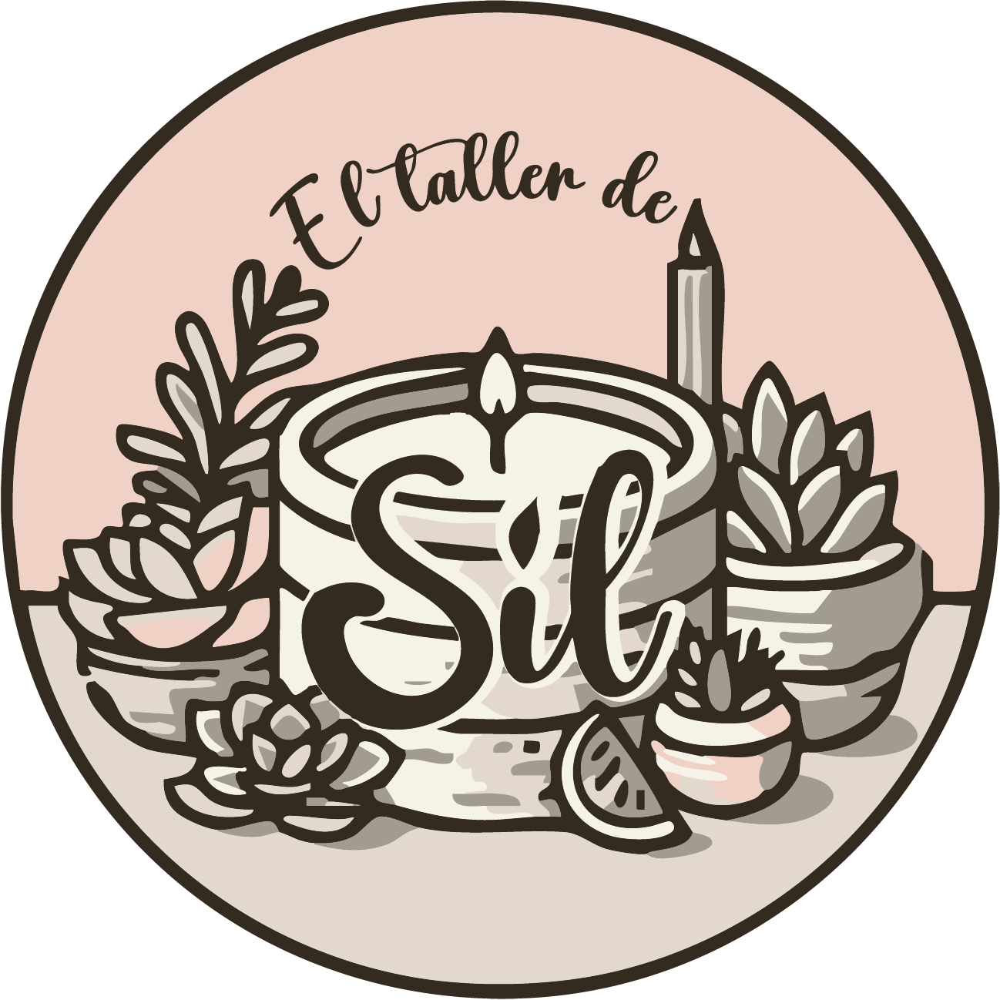

<!doctype html><html lang="es"><meta charset="utf-8"><meta name="viewport" content="width=device-width,initial-scale=1,viewport-fit=cover"><meta name="theme-color" content="#eed0c2"><meta name="apple-mobile-web-app-capable" content="yes"><link rel="manifest" href="manifest.json"><link rel="apple-touch-icon" href="icon.png"><title>El taller de Sil</title><style>
*{box-sizing:border-box}body{margin:0;background:#f4f1e6;color:#30291c;font:16px system-ui}main{max-width:650px;margin:auto;padding:16px 16px 110px}header{display:flex;align-items:center;gap:14px}header img{width:78px;border-radius:50%}h1,h2{font-family:Georgia,serif}h1{font-size:25px}h2{font-size:21px;margin:0 0 14px}section{background:#fffdf7;border:1px solid #dfd7ca;border-radius:18px;padding:16px;margin:12px 0}label{display:block;font-size:14px;margin:10px 0 5px}input,select,button{font:inherit;border:1px solid #a29c90;border-radius:10px;padding:11px;min-width:0}input:not([type=checkbox]),select{width:100%;background:#fffdf7;color:inherit}input[type=range]{accent-color:#665d4d;padding:0}button{background:#dfd7ca;color:#30291c;cursor:pointer;margin:4px 0}button.primary{background:#30291c;color:#fffdf7;border:0;width:100%}button.soft{background:#eed0c2}nav{position:fixed;bottom:0;left:0;right:0;background:#dfd7ca;display:flex;justify-content:center;padding:8px 4px calc(8px + env(safe-area-inset-bottom));z-index:5}nav button{border:0;background:transparent;flex:1;max-width:130px;font-size:11px;padding:8px 2px}nav button.active{background:#30291c;color:white}nav b{display:block;font-size:20px}.row{display:flex;gap:10px;align-items:center;justify-content:space-between}.row>*{min-width:0}.grid{display:grid;grid-template-columns:1fr 1fr;gap:10px}.muted{color:#71695d;font-size:13px}.total{background:#30291c;color:#f4f1e6}.total strong{font-size:32px}.item{border-bottom:1px solid #dfd7ca;padding:10px 0}.thumb{width:48px;height:48px;object-fit:cover;border-radius:8px}img.preview{width:100%;max-width:350px;display:block;margin:auto}dialog{border:0;border-radius:18px;max-width:95vw;width:440px;background:#f4f1e6;color:inherit}dialog::backdrop{background:#0008}.warn{color:#a12d24}small{display:block} </style><main><header><div><h1>El taller de Sil</h1><div class="muted">Tu taller, organizado.</div></div></header><div id="view"></div></main><nav id="nav"></nav><dialog id="modal"></dialog><script src="app.js"></script></html>
